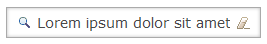

With the move to RAP 2.0, we are cleaning up our APIs. This will lead to breaking changes. Existing RAP 1.x applications will therefore need minor adjustments to work with RAP 2.0. See the RAP 2.0 Migration Guide for instructions on updating your code to RAP 2.0.
We renamed this package to org.eclipse.rap.rwt in order to comply with Eclipse naming convention that packages should be prefixed with the project that creates it.
This constant has been moved to the class RWT.
With the new JSON-based protocol in place the old deprecated classes and methods for rendering JavaScript are now obsolete. JSWrite, JSVar, JSListenerType and JSListenerInfo classes have been removed together with the corresponding methods in WidgetLCAUtil and ControlLCAUtil.
Tree and Table widgets can now be scrolled on mobile devices (iOS and Android) by dragging a row with one finger. However, Tree and Table can only scroll item-by-item, not smooth as like the List.
Text widget now have full support for SWT.ICON_SEARCH and SWT.ICON_CANCEL style flags.

The themeablity of some widgets has been improved. The following properties and states have been added:
box-shadow property for DateTime
hover state and text-decoration property for List-Hyperlink
text-decoration property for Button
disabled state for Combo-Button-Icon